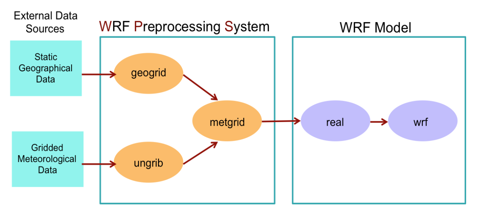

Weather Research and Forecasting Model (WRF)#
The aim of this notebook is to run WRF regional initialized simulations of two events that have specific boundary layer structures of interest
With these exercises we hope for you to achieve#
An understanding of the workflow for a weather forecast model
The ability to perform basic sensitivity experiments
An understanding of how boundary layer evolution maybe impact forecast evolution
A baseline diagnosis of multiple WRF experiments
Note
To the greatest extent possible we will follow the Weather Research and Forecasting Model (WRF) users’ guide for setting up, submitting, running and processing output from simulations.
Description of Model Cases and Configurations#
While WRF is able to simulation weatehr events in a regional domain over much of the globe, we will limit our experiments, at least initially to 2 case studiesthat will hopefully illusttae teh role of boundary layer processes in the evolution of these events
Test Run of WRF Cases#
Please follow as closely as possible the test cases of the WRF users’ guide, the online tutorial and the accompanying tutorial guide as closely as possible. Additionaly, there are number of great pre-recorded lectures from the WRF in-person tutorial here. If you are unfamliar with WRF, of particular interest will be the Introduction to WRF, Running the WPS system, Running WRF and importantly to Boundary Layer Physics and Surface Process avalailable.
If you are not currently on Cheyenne then login. The model will not compile and run properly on Casper
ssh -XY $USER@cheyenne.ucar.edu
Below is a condensed summary of the key steps. If you haven’t already create a ASP2023 work directory
mkdir /glade/work/$USER/ASP2023
cd /glade/work/$USER/ASP2023
git clone https://github.com/wrf-model/WRF
git clone https://github.com/wrf-model/WPS
We will return to the WPS code later.
Change to (checkout) the current version (4.5) release branch
cd WRF
git checkout release-v4.5.1
This now stages the code we need to use
Configure WRF
./configure
You will be presented with options, so make the following choices.
Choose option 13 for serial generic intel
Then, choose option 1 basic nesting This then generates the
configure.wrffile if succesfull with the following end message
*****************************************************************************
This build of WRF will use NETCDF4 with HDF5 compression
*****************************************************************************
Compile WRF
Compile WRF where the build type is em_real to denote a real case study (as opposed to seomthing like idealised)
Note
Below commands starting with qcmd push the work to a separate compute node to avoid congestion on the login nodes
Need to do a small code grab first and then compile
cd phys && make submodules && cd ..
qcmd -- ./compile -j 8 em_real >& log.compile
Leave this running in your window until complete
Warning
This compile can take up to 30 minutes so feel free to move onto some of the other project tasks in the mean time. Maybe start thinking about WRF sensitivity experiments or starting with the CLASS set-up if you haven’t already.
Check build When complete do a build check by viewing the end of the compile log file
log.compile
tail log.compile
If the code compiled correctly near the end you should see
---> Executables successfully built <---
Note
If you need to recompile the whole set of executables for WPS and WRF run the local /clean command
Code and executable check Once the compilation completes, to check whether it was successful, you need to look for executable in the
WRF/maindirectory:
ls -l main/*.exe
WPS code configure - find a more detailed description here Go to the WPS code based and select the right code branch
cd ../WPS
git checkout release-v4.5
Configure WPS As for WRF, configure WPS to be ready for compilation
./configure
You will be presented with compile/platform options, so make the following choices.
Choose 17 for serial compile on intel You should see a
configure.wpsfile when this completes
Compile WPS
qcmd -- ./compile >& compile.log
This should take much less take than WRF (a few minutes)
If your compilation was successful, you should see these executables created in (make sure they are not of size zero)
geogrid.exe, ungrib.exe, metgrid.exe
Note
If they are zero size type the following to see if there were errors output (i.e. does the word ‘error’ occur)
grep -i error compile.log
This should have completed your setup. To summarize, this is the prestaging of code required for running WRF. It should not need to be repeated from now on, unless code is changed: 
Summary WRF/WPS Workflow
WPS
geogrid.exe - creates terrestrial data (static).
ungrib.exe - unpacks GRIB meteorological data and packs it into an intermediate file format.
metgrid.exe - interpolates the meteorological data horizontally onto your model domain (WRF input)
WRF
real.exe - vertically interpolates the data onto the model coordinates.
wrf.exe - generates the model forecast.
Now move on to running the WRF control simulation which specifies the domain